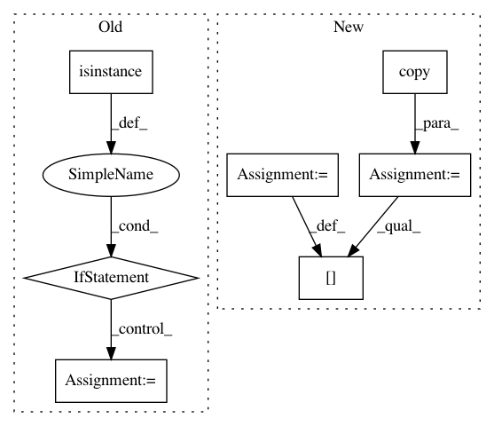

b5d529ade954f627b62dd33a94313c5d58cb71c8,nilearn/_utils/niimg.py,,new_img_like,#Any#Any#Any#Any#,71
Before Change
// XXX If the niimg is a list of 3D images, we don"t need to load them all
// But this is a bit ugly
if hasattr(ref_img, "__iter__") and not isinstance(ref_img, string_types):
ref_img = next(ref_img)
ref_img = load_img(ref_img)
header = ref_img.get_header() if copy_header else None
// XXX Nifti can"t handle boolean, is this the case of other types?
data = np.asarray(data)
After Change
data = as_ndarray(data, dtype=np.int8)
header = None
if copy_header:
header = copy.copy(ref_img.get_header())
header["scl_slope"] = None
header["scl_inter"] = None
header["glmax"] = None
header["cal_max"] = max(data)
header["cal_max"] = min(data)
In pattern: SUPERPATTERN
Frequency: 3
Non-data size: 7
Instances
Project Name: nilearn/nilearn
Commit Name: b5d529ade954f627b62dd33a94313c5d58cb71c8
Time: 2015-03-18
Author: abraham.alexandre@gmail.com
File Name: nilearn/_utils/niimg.py
Class Name:
Method Name: new_img_like
Project Name: home-assistant/home-assistant
Commit Name: 9f54bcc21b1744f2850a35e54903f3581d14badb
Time: 2015-12-23
Author: marhje52@kth.se
File Name: homeassistant/components/mysensors.py
Class Name:
Method Name: setup
Project Name: bashtage/linearmodels
Commit Name: 5d8b81e16143d6eea9e86a586fe737854c03c772
Time: 2017-04-07
Author: kevin.k.sheppard@gmail.com
File Name: linearmodels/tests/panel/test_pooled_ols.py
Class Name:
Method Name: test_two_way_clustering